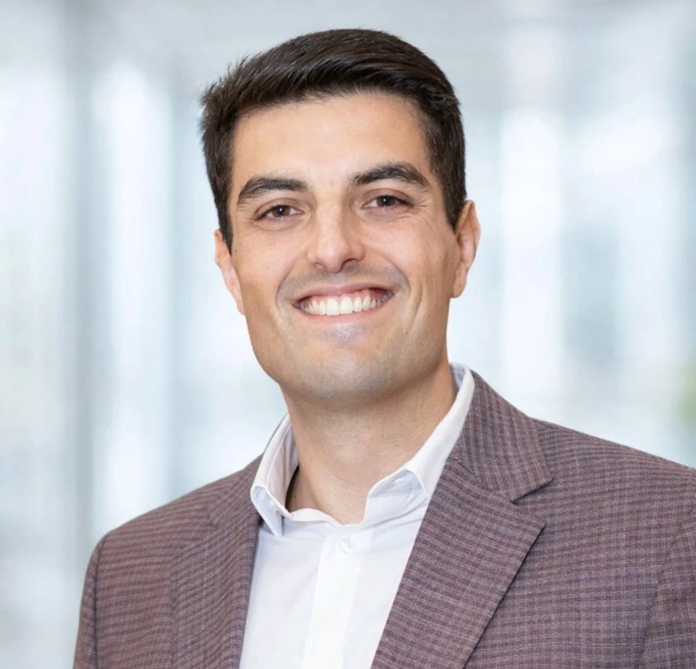
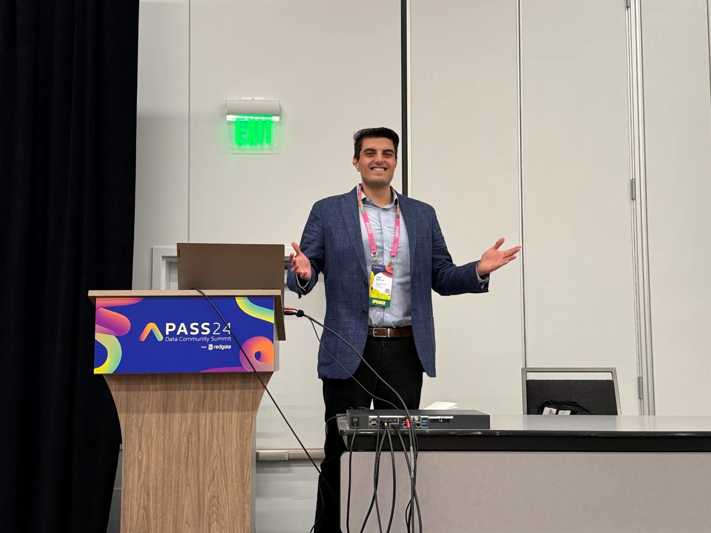
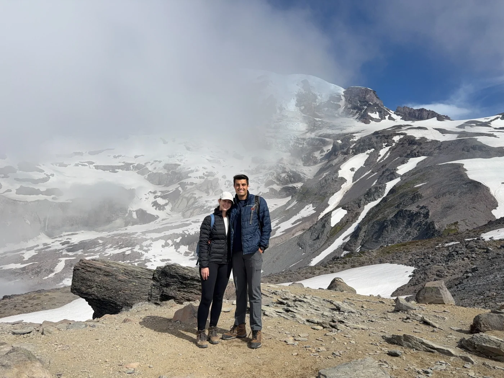
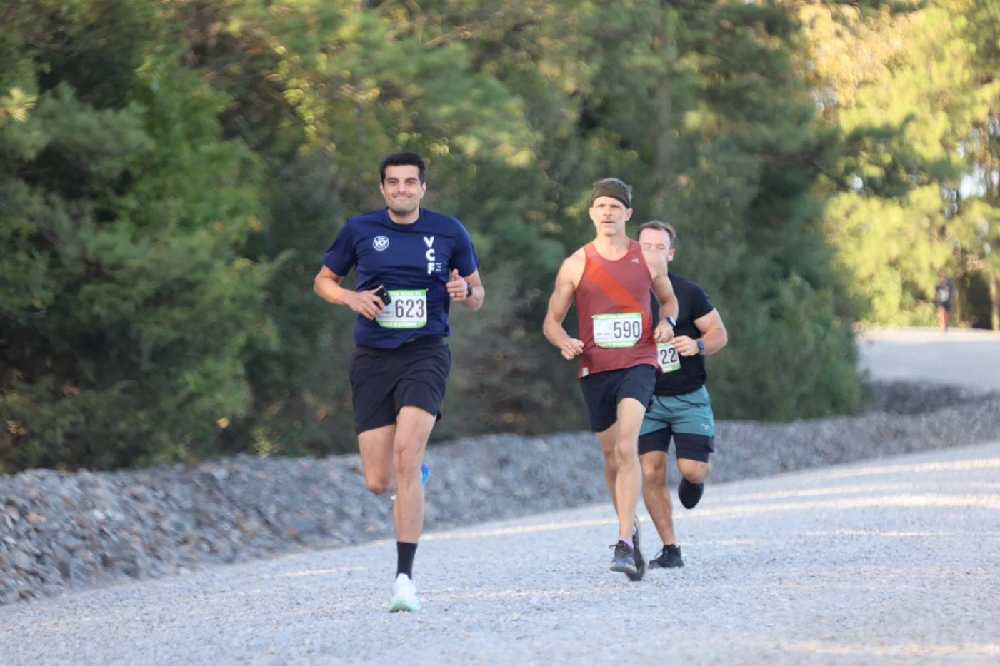
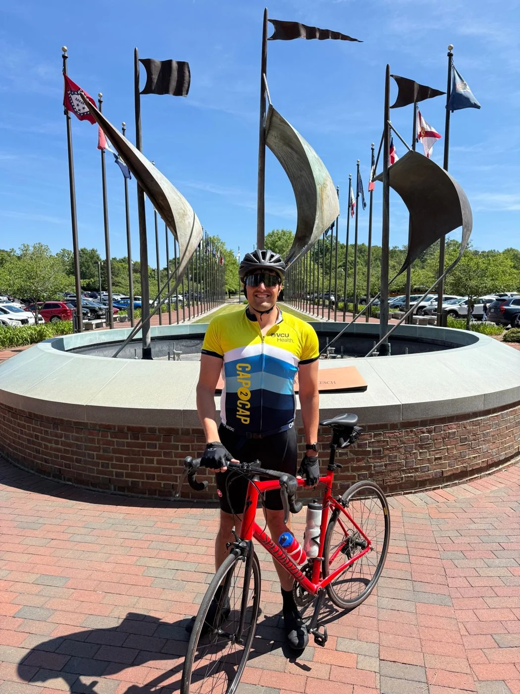

People
Clear communication, shared priorities, and responsibility for the work.
People • Process • Technology
I’m Jad Elahmad. I help teams plan and deliver technology initiatives, improve processes, and connect technical work to business priorities.

01 / IntroductionMy Approach
Technology works best when people understand the goal and have a clear way to get there.
My background spans business systems, IT infrastructure, cybersecurity, service management, and project delivery across global teams. I started by supporting software and business systems, working with engineers, analysts, and leaders to improve how work gets done.
Today, I bring those perspectives to project and program management. I help teams agree on priorities, understand dependencies, and turn business and security requirements into work they can carry out.
More About My Background On LinkedInClear communication, shared priorities, and responsibility for the work.
Practical plans, useful governance, and workflows teams can follow.
Technical understanding that connects systems, security, and business needs.
Professional Focus
My work connects technical teams and business priorities, from planning an initiative to making it part of day-to-day operations.
Organizing initiatives into clear responsibilities, milestones, and decisions. I work with teams to track dependencies, surface risks, and keep delivery moving.
Planning · Coordination · DeliveryTranslating security and compliance requirements into coordinated work, with clear ownership and a practical way to track progress.
Drawing on infrastructure and systems experience to understand technical dependencies and coordinate changes with the teams responsible for them.
Reviewing how work moves between teams, clarifying handoffs, and improving workflows so services are easier to support and manage.
Helping engineers, business teams, leaders, and vendors understand each other’s needs, make decisions, and stay accountable to shared commitments.
Outside My Day-To-Day Work
A space for personal technology projects, experiments, and ideas outside my day-to-day work.
I use personal projects to explore ideas and learn by building. I’ll share details here when they’re ready.

Conference SpeakingIdeas & Experience
I’ve spoken at PASS Data Community Summit in 2022, 2023, and 2024. I enjoy sharing practical experiences and hearing how others approach the challenges of working in technology.
Connect with me about your event, audience, or idea.
Writing
Thoughts on managing technology work, collaborating across teams, and lessons from experience.
I’ll share my articles here as they become available.
Life Outside Work
Running, cycling, and time outdoors with the people who matter to me.
Outside of work, I’m passionate about endurance sports and the challenges that come with them. Whether I’m training for a marathon, spending a long day on the bike, or hiking somewhere new with my wife, I enjoy setting ambitious goals and putting in the work to reach them.
Running, cycling, and hiking have taught me a lot about consistency, accountability, and resilience. They help me stay healthy, reset, and connect with others.
Some of my favorite experiences come from the communities around these activities: sharing miles, encouraging each other through difficult days, and celebrating what we accomplish together.
For me, it’s less about competing with everyone else and more about challenging myself, staying active, and enjoying the people and experiences along the way.



Training for a marathon, thinking about riding the Virginia Capital Trail end-to-end, or looking for your next challenge? I’m always happy to connect.
From The Publications I Follow
Reporting on cybersecurity, privacy, and AI risk from independent publications. These articles are written by their publishers.
Investigations into cybercrime, fraud, and the people behind security incidents.
Visit KrebsOnSecurityCoverage of threats, vulnerabilities, and developments across cybersecurity.
Visit The Hacker NewsNews on security incidents, ransomware, software flaws, and technology.
Visit BleepingComputerContact
I’d love to hear what you’re working on.